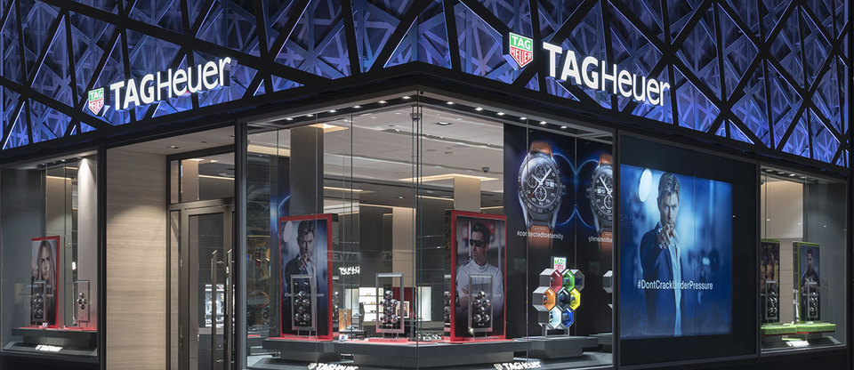
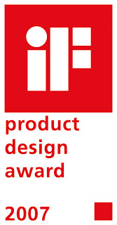
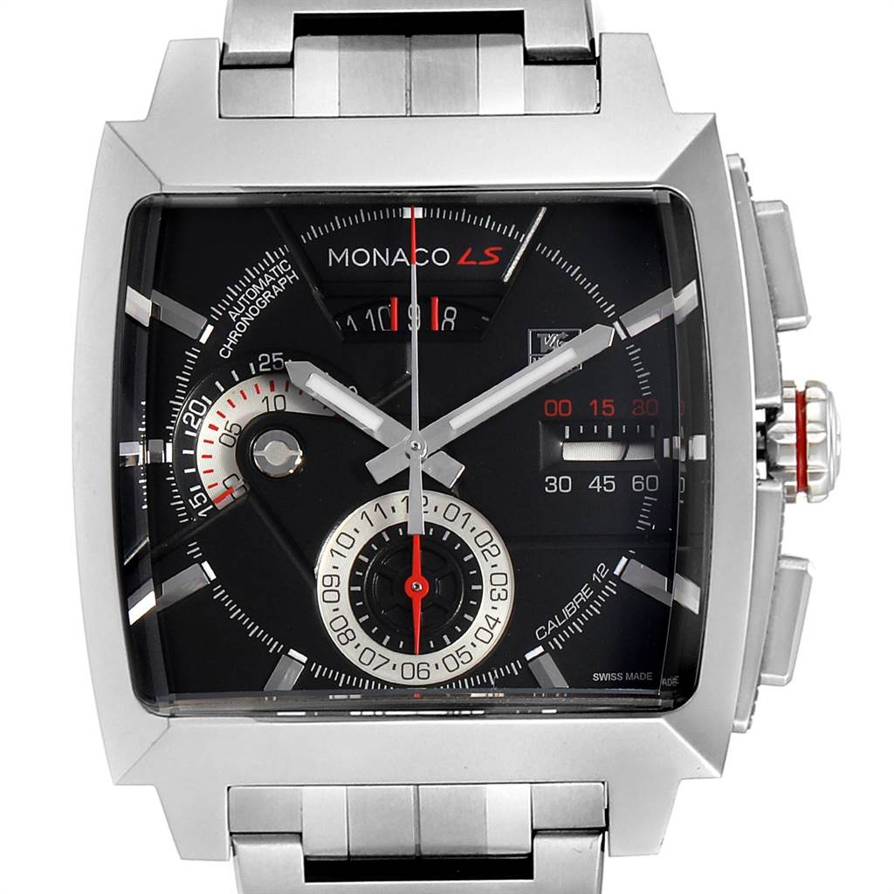
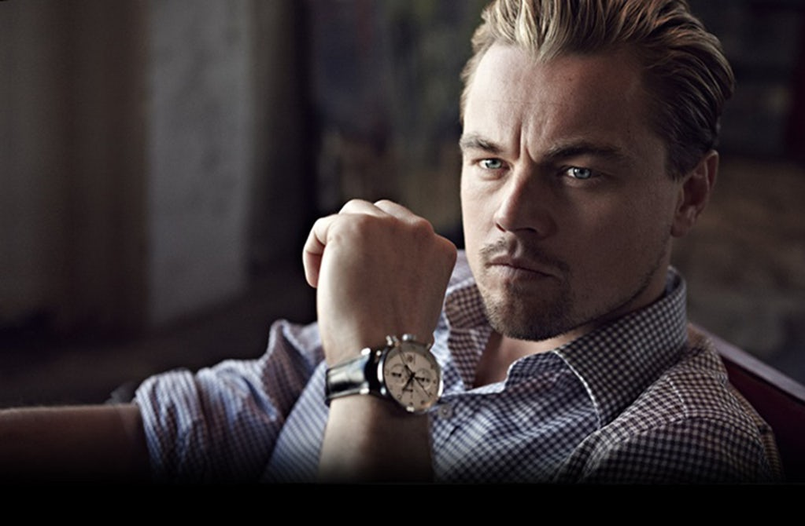
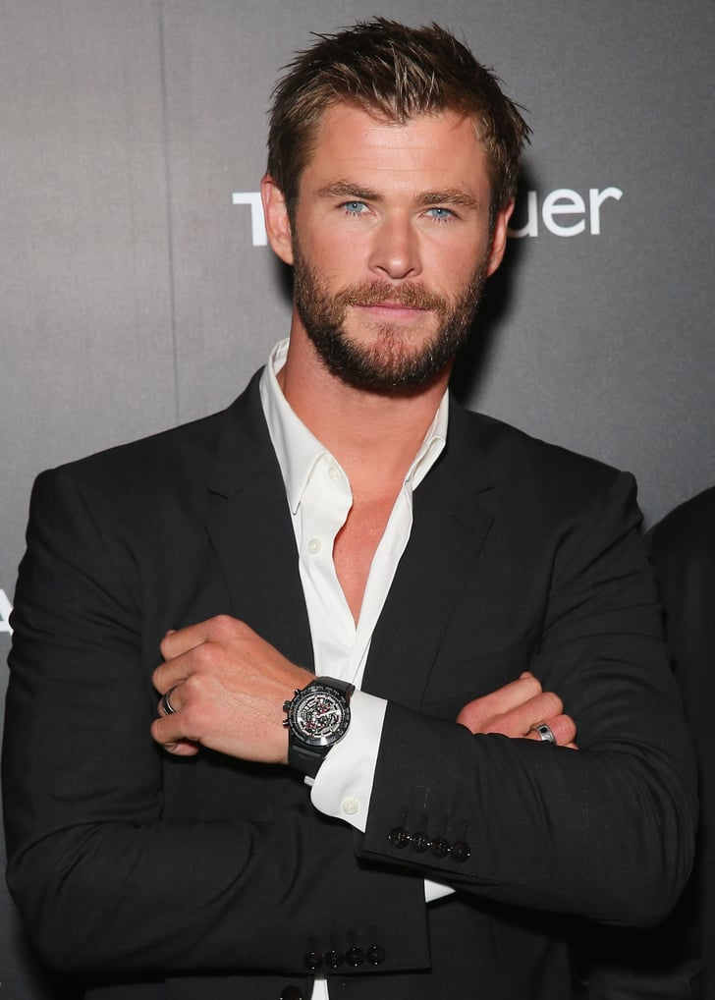

Awards
In 2007, TAG Heuer won the iF product design award for its Monaco Calibre 360 LS Concept Chronograph
The award was given away by the International Forum Design Hannover GmbH which was held in Hanover, Germany. The watch received the award in the Leisure/Lifestyle category. It was chosen among more than 2,200 timepieces presented by watchmakers from 35 countries. TAG Heuer received the iF product design award for the second time in two years. In 2006, another TAG Heuer watch, entitled Professional Golf Watch, won in the same Leisure/Lifestyle category.
The design of the Professional Golf Watch was developed with Tiger Woods.


Patrons
TEG Heuer keeps their image of a luxury brand by having strong links with sport and Hollywood.
TAG Heuer has paid numerous celebrities to promote their products. Hollywood actors with our products
attract customers to come purchase more of our products.

